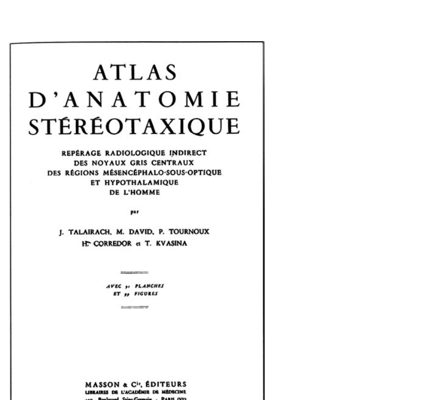
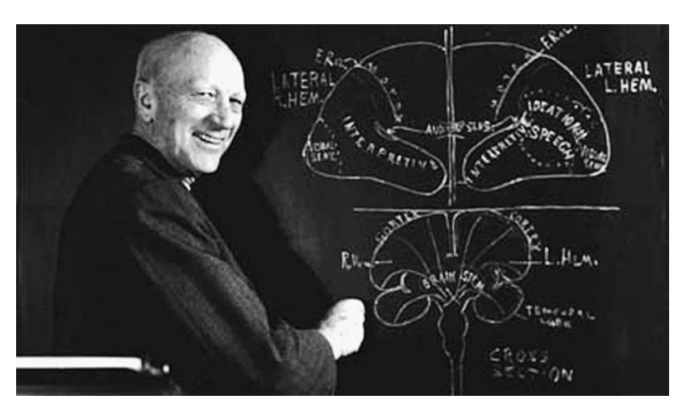

Chương 14 — Phẫu thuật thần kinh: Từ Cushing đến Penfield
Chương 14
Phẫu thuật thần kinh: Từ Cushing đến Penfield
Từ thuở sơ khai, bộ não đã đặt ra những thách thức vô cùng khắc nghiệt đối với phẫu thuật. Phẫu thuật thần kinh phải đến khoảng năm 1900 mới bắt đầu hình thành như một chuyên khoa riêng. Harvey Cushing tại Hopkins và Harvard là người dẫn đầu, dựa trên kỹ thuật phẫu thuật tỉ mỉ và sự kết hợp nhiều phương pháp kỹ thuật. Phẫu thuật u tuyến yên là một trong những tiến bộ nổi tiếng nhất của ông, bao gồm việc xác định ‘‘bệnh Cushing’’. Việc quan sát hình ảnh bộ não được thử nghiệm bằng chụp não bơm khí và chụp mạch máu não, trong đó phương pháp sau được cải thiện vượt bậc vào thập niên 1950 nhờ kỹ thuật tiêm qua động mạch đùi, thúc đẩy sự ra đời của ngành điện quang thần kinh. Phẫu thuật định vị não (stereotaxy) cho phép đặt các điện cực sâu theo tọa độ chính xác, dẫn đến sự ra đời của tập bản đồ não Talairach, nền tảng cho các tập bản đồ hình ảnh não hiện đại. Những thủ thuật đặt điện cực sâu đầu tiên để giảm nhẹ bệnh Parkinson cũng được giới thiệu. Wilder Penfield ở Canada đã đi đầu trong phẫu thuật điều trị động kinh, hiện là một trong những thủ thuật não có tỷ lệ thành công cao nhất. Phẫu thuật tâm thần (psychosurgery) có một giai đoạn phát triển ngắn ngủi trước khi bị từ bỏ khi các kết cục tiêu cực trở nên rõ ràng và các liệu pháp thuốc ra đời.
Lịch sử phẫu thuật thần kinh có thể được xem là rất dài hoặc rất ngắn. Nó rất dài nếu xét đến bằng chứng về thuật khoan sọ (mở hộp sọ) như một phần của các nghi lễ cổ đại từ thời Ai Cập cổ đại và xa hơn nữa. Nó rất ngắn nếu xét theo sự hình thành của phẫu thuật thần kinh như một phân ngành của ngoại khoa trong thế kỷ XX. Chính góc nhìn thứ hai này mới có liên quan đến việc hiểu vai trò của phẫu thuật thần kinh trong lịch sử khoa học thần kinh và hiểu biết hiện đại của chúng ta về bộ não (Greenblatt, 1997a; Spencer, 1997).
Với mục đích này, câu chuyện bắt đầu với hai khám phá thiết yếu cho sự ra đời của ngành phẫu thuật nói chung: sự xuất hiện của gây mê toàn thân vào thập niên 1840 và việc đưa vào áp dụng các kỹ thuật vô khuẩn và sát khuẩn vào thập niên 1860.
Sau đó, bước tiến lớn đầu tiên hướng tới phẫu thuật não là việc phát hiện ra sự định khu chức năng của đại não. Điều này xuất phát, một mặt, từ việc Paul Broca và Karl Wernicke xác định các trung khu vỏ não phụ trách ngôn ngữ qua các ca lâm sàng vào thập niên 1860 và 1870, và mặt khác, từ bằng chứng về các trung khu vỏ não phụ trách điều khiển vận động. Quá trình này bắt đầu vào năm 1870 với các thí nghiệm của Gustav Fritsch và Eduard Hitzig tại Berlin, sử dụng kích thích điện lên bề mặt vỏ não chó, một hướng tiếp cận được David Ferrier ở London theo đuổi mạnh mẽ vào thập niên 1870 và sau đó trên nhiều loài động vật khác nhau. Nhờ đó, dải vận động—vùng vỏ não ở hồi trước trung tâm nơi chuyển động của các cơ khác nhau trong cơ thể được biểu diễn—đã được hé lộ. Các khái niệm của Hughlings Jackson trong giai đoạn này về các ổ não gây co giật vận động đi kèm cơn động kinh đã góp phần hình thành quan niệm về sự biểu diễn có trật tự của các cơ và chuyển động cơ thể trong sự điều khiển vận động của vỏ não. Cũng trong giai đoạn này, nhưng bị lãng quên cho đến gần đây, là công trình của Angelo Mosso trên các bệnh nhân chấn thương sọ não, cho phép quan sát sự thay đổi lưu lượng máu não dưới các điều kiện hành vi khác nhau (xem Chương 13).
Bất chấp những tiến bộ này, rất ít bác sĩ phẫu thuật dám thực hiện các ca mổ trên não vì sự thiếu hiểu biết vẫn còn rất lớn về định khu chức năng ở các vùng não khác nhau, thiếu dụng cụ chuyên dụng, và những rủi ro cao trong quá trình phẫu thuật cũng như chăm sóc hậu phẫu. Một số ít người đã mạnh dạn bước tới. Bác sĩ phẫu thuật đầu tiên vận dụng những tiến bộ này để thực hiện phẫu thuật cắt bỏ khối u não là William MacEwen ở Glasgow, như ông đã báo cáo lần đầu vào năm 1879. Nhiều ca phẫu thuật hơn được Bennett và Godlee báo cáo tại London vào năm 1884. Năm 1886, Victor Horsley được bổ nhiệm tại Queen’s Square, London—bệnh viện thần kinh danh tiếng—với tư cách là bác sĩ phẫu thuật cho bệnh nhân liệt và động kinh. Sự kiện này được xem là khởi đầu của phẫu thuật thần kinh như một chuyên khoa sâu của ngoại khoa (Greenblatt, 1997a, 1997b). Loạt bệnh nhân đầu tiên của Horsley được báo cáo vào năm 1890: 43 ca phẫu thuật cắt bỏ khối u não, với 10 ca tử vong.
Báo cáo này và danh tiếng của Queen’s Square đã thúc đẩy một số bác sĩ phẫu thuật trên khắp thế giới tiếp bước Horsley. Năm 1903, một bác sĩ phẫu thuật trẻ, Antony Chibault, đã biên tập bộ cẩm nang ba tập mang tên L’Etat Actuel de la Chirurgie Nerveuse, gồm các bài viết của 50 bác sĩ phẫu thuật trên toàn thế giới (Walker, 1997, xiii). Tuy nhiên, kết quả vẫn đáng thất vọng; tỷ lệ tử vong cao, và sự cải thiện sức khỏe của bệnh nhân còn hạn chế. Horsley, cũng như hầu hết các bác sĩ phẫu thuật khác, vẫn tiếp tục hành nghề ngoại khoa tổng quát và chỉ thực hiện phẫu thuật não tùy theo từng ca bệnh.
Harvey Cushing
Người dẫn đường tiến về phía trước hơn bất kỳ ai khác là Harvey Cushing (Hình 14.1). Ông giữ vai trò trung tâm đến mức tóm tắt cuộc đời ông cũng chính là tóm tắt quá trình hình thành phẫu thuật thần kinh như một chuyên ngành lâm sàng.
Sinh ra tại Cleveland, Ohio, năm 1869, ông học đại học tại Yale và được đào tạo y khoa tại Harvard. Tại đây, ông bắt đầu quan tâm đến các bệnh nhân chấn thương sọ não và cân nhắc phẫu thuật như một sự nghiệp. Trong thời gian thực tập nội trú tại Bệnh viện Đa khoa Massachusetts, ông bị thu hút bởi môi trường lâm sàng sôi nổi của Trường Y và Bệnh viện Johns Hopkins và vào học nội trú tại đó năm 1896. Ông được đào tạo về phẫu thuật dưới sự hướng dẫn của William Halsted, người khi ấy nổi tiếng toàn thế giới vì đã đưa ngành phẫu thuật lên một tầm cao mới về tính chặt chẽ và tinh vi.
. . . một tinh thần nghiên cứu sâu sắc thấm đẫm nơi đây. Đối với phẫu thuật, thái độ khoa học này có hai khía cạnh thực tiễn. Phần dễ thấy hơn là cam kết của Halsted trong việc cải thiện phẫu thuật lâm sàng bằng cách thúc đẩy nền tảng khoa học của nó, đặc biệt là sinh lý học và bệnh học. Nhưng cùng tinh thần nghiên cứu đó cũng được áp dụng vào mọi thứ mà các bác sĩ phẫu thuật làm, bao gồm kỹ thuật thao tác tay và chăm sóc quanh phẫu thuật. Nếu có bằng chứng rõ ràng cho thấy một cách làm tốt hơn, thì không có gì là bất khả xâm phạm.
(Greenblatt và Smith, 1997, 171)
Được khích lệ bởi môi trường này, khả năng đảm đương khối lượng công việc khổng lồ của Cushing sớm bộc lộ. Nhanh chóng trở thành bác sĩ nội trú trưởng của Halsted, và cùng với đó là giảng viên ngoại khoa, Cushing gánh vác phần lớn khối lượng phẫu thuật tại Hopkins trong suốt thời gian đào tạo còn lại đến năm 1900. Trong thời gian này, ông bắt đầu tiếp nhận các ca bệnh thần kinh, đặc biệt quan tâm đến phẫu thuật giảm đau dây thần kinh sinh ba.
Trong số nhiều đồng nghiệp và bạn bè mới tại Hopkins có trưởng khoa Nội khoa, William Osler. Osler cũng là một huyền thoại đương thời, kết hợp các tiêu chuẩn lâm sàng cao với tính cách thân thiện và sự quan tâm sâu rộng đến lịch sử và văn hóa—một sự tương phản với sự tập trung đơn độc vào công việc của Cushing. Tuy nhiên, những điều trái ngược dường như thu hút nhau, và Osler đã dành sự quan tâm đặc biệt cho sự nghiệp của người đồng nghiệp trẻ. Lời khuyên quan trọng nhất của ông là khi kết thúc khóa đào tạo, Cushing nên dành một năm du hành ở châu Âu để thăm viếng và làm quen với các nhà khoa học, bác sĩ lâm sàng và viện khoa học hàng đầu châu Âu. Điều này phản ánh thực tế rằng hệ thống Hopkins được xây dựng theo mô hình khoa học, y học mới và phương pháp giảng dạy của châu Âu.
Chính vì thế, Cushing đã dành thời gian từ tháng 7 năm 1900 đến tháng 8 năm 1901 tại châu Âu. Ở London, ông gặp Horsley nhưng thất vọng vì thiếu các tiêu chuẩn thực hành mà ông đã quen thuộc ở Hopkins. Ông làm việc với Kronecker tại Berne, Thụy Sĩ, về sự kiểm soát huyết áp của thân não trong điều kiện tăng áp lực nội sọ, một vấn đề then chốt có ứng dụng thực tiễn trong việc xác định bệnh lý ảnh hưởng đến não. Ông đến thăm Mosso ở Turin, Ý, để nghiên cứu cùng vấn đề này, tận dụng các quan sát phong phú của Mosso về lưu lượng máu não ở nạn nhân chấn thương. Cuối cùng, ông làm việc ngắn hạn với Sherrington ở Liverpool về lập bản đồ các vùng vận động của vỏ não ở vượn nhân hình. Những nỗ lực nghiên cứu và các mối liên hệ cá nhân này đã mở rộng đáng kể kinh nghiệm và sự am hiểu văn hóa của vị bác sĩ lâm sàng tận tụy.
Trở về Hopkins, ông được bổ nhiệm làm bác sĩ phẫu thuật dưới quyền Halsted. Năm 1903, ông là một trong số ít bác sĩ phẫu thuật sáng lập Hiệp hội Phẫu thuật Lâm sàng (Society of Clinical Surgery). Đồng thời, Cushing thúc giục Halsted quyết liệt để được bổ nhiệm làm bác sĩ phẫu thuật thần kinh, mặc dù lúc bấy giờ hầu như chưa có bệnh nhân nào cần phẫu thuật não. Cuối cùng Halsted nói với ông: ‘‘Được rồi, lĩnh vực này là của anh’’ (Greenblatt và Smith, 1997, 173). Dựa trên một tá ca cắt bỏ khối u nội sọ, ông đã đọc một bài diễn văn tại một hội nghị y khoa với nhan đề ‘‘Lĩnh vực chuyên biệt của Phẫu thuật Thần kinh’’ (The Special Field of Neurological Surgery), được đăng trên tạp chí Bulletin of the Johns Hopkins Hospital vào đầu năm 1905. Tạp chí đó nghe có vẻ ít người biết, nhưng thời bấy giờ nó được đọc rất rộng rãi—và vẫn tiếp tục như vậy đến tận thập niên 1950, khi Vernon Mountcastle công bố bốn bài báo kinh điển của mình về các cột vỏ não tại đây (xem Chương 10).
Trong bài viết của mình, Cushing bày tỏ sự tiếc nuối về tình trạng manh mún của phẫu thuật não, với sự thiếu hụt chuyên môn và phối hợp trong các ca mổ. Ông đề xuất rằng chuyên môn hóa trong phẫu thuật não là cần thiết, được xây dựng trên nền tảng đào tạo có hệ thống về thần kinh học lâm sàng, bệnh học thần kinh và sinh lý học thần kinh thực nghiệm (Greenblatt và Smith, 1997, 175). Đây là tầm nhìn của ông cho tương lai, cấu thành lời kêu gọi rõ ràng nhất cho việc thành lập phân ngành phẫu thuật thần kinh. Tuy nhiên, để có hiệu quả, việc đào tạo như vậy đòi hỏi một lượng kiến thức đầy đủ trong từng lĩnh vực này. Cushing và những người hưởng ứng lời kêu gọi của ông đều biết họ đang thiếu nền tảng đó và có rất nhiều việc phải làm phía trước.
Năm 1912, Cushing chuyển đến Harvard để đứng đầu ngành phẫu thuật tại Bệnh viện Peter Bent Brigham, một vị trí trọng yếu trong nền y học Hoa Kỳ. Khi Đại chiến thế giới 1914–1918 bùng nổ, Cushing lập tức tổ chức một đơn vị phẫu thuật hỗ trợ nỗ lực chiến tranh tại Pháp và đích thân ra mặt trận vào năm 1917–1918 để chỉ huy công tác này. Kinh nghiệm chiến tranh khi xử lý nhiều loại chấn thương, đặc biệt là chấn thương sọ não, đã thuyết phục ông rằng thời điểm phát triển độc lập của phẫu thuật thần kinh đã đến. Tại một hội nghị năm 1919, ông trình bày kết quả một loạt ca phẫu thuật não với tỷ lệ tử vong chỉ 7,4% (vào thời điểm tỷ lệ tử vong lên tới 50% ở các trung tâm khác). Người ta ghi lại rằng, sau bài trình bày này, một bác sĩ phẫu thuật hàng đầu khác là William Mayo đã đứng dậy giữa cử tọa và tuyên bố: ‘‘Thưa quý vị, ngày hôm nay chúng ta đã chứng kiến sự ra đời của một chuyên khoa mới—phẫu thuật thần kinh.’’ (Greenblatt và Smith, 1997, 187) Cushing đã chuẩn bị sẵn đề xuất thành lập một hiệp hội cho chuyên khoa mới, và vào năm 1920, Hiệp hội các Bác sĩ Phẫu thuật Thần kinh (Society of Neurological Surgeons) được thành lập, là hiệp hội đầu tiên thuộc loại này trên thế giới.
Như Saris (1997, 249) đã nhận xét,
Hiếm có trong lịch sử y học một cá nhân gần như đơn độc phát triển và thúc đẩy cả một chuyên khoa, nhưng điều đó hoàn toàn đúng với Harvey Cushing trong giai đoạn khoảng từ năm 1900 đến năm 1930. Trong khoảng thời gian ba thập kỷ này, Cushing đã chứng minh rằng các khối u não có thể được cắt bỏ với độ an toàn hợp lý, đồng thời góp phần thiết kế và triển khai các thiết bị cũng như kỹ thuật giúp điều đó trở nên khả thi. . . . Trong ba [thập kỷ] này, thành công của ông được phản ánh qua tỷ lệ tử vong phẫu thuật đối với các khối u như u màng não, giảm từ 25% xuống 12% rồi còn 4%.
Vào cuối sự nghiệp hoạt động tích cực của mình, trong cuốn Intracranial Tumours (1932), Cushing đã chỉ ra những đổi mới giúp đạt được bước tiến này và các tiến bộ liên quan trong phẫu thuật não:
(1) các phương pháp giải áp được chấp nhận rộng rãi để giảm căng thẳng nội sọ, (2) quá trình lành vết thương hoàn hảo đến mức nhiễm trùng thứ phát hầu như không còn được biết đến [điều này đạt được thuần túy nhờ kỹ thuật vô khuẩn và sát khuẩn, trước khi có kháng sinh vào thập niên 1940], (3) việc khâu đóng riêng lớp cân Galea bằng chỉ lụa đen mảnh chôn vùi khiến chứng thoát vị não (fungus cerebri) từng gây khiếp sợ nay gần như bị lãng quên, (4) thay cho gây mê hít ether, việc [Thierry] de Martel đưa vào gây tê tại chỗ . . . [điều này cho phép bệnh nhân vẫn tỉnh táo trong suốt ca mổ, được Penfield sử dụng rất hiệu quả trong các cuộc thám sát vỏ não người vào thập niên 1940 và 1950], (5) khả năng định vị khối u chính xác hơn mà kỹ thuật chụp não thất của Dandy cho phép thực hiện trong các ca khó xác định, (6) việc sử dụng máy hút chạy bằng động cơ như một công cụ hỗ trợ không thể thiếu cho mọi ca mổ và (7) những cải tiến liên tiếp trong phương pháp cầm máu, từ năm 1927 đã được bổ sung vô cùng hiệu quả nhờ sự ra đời của các thiết bị phẫu thuật điện [ở đây ông đề cập đến dao đốt điện, giúp nhanh chóng làm đông các mạch máu nhỏ đang chảy máu thông qua kẹp nhỏ].
Những tiến bộ này không chỉ mang lại lợi ích cho bệnh nhân mà còn được chuyển giao sang các ca phẫu thuật thần kinh trên động vật linh trưởng không phải người. Chẳng hạn, khi John Fulton từ Oxford đến Trường Y Harvard để được Cushing đào tạo vào cuối thập niên 1920, ông đã quan sát và học hỏi các kỹ thuật này ngay bên cạnh bậc thầy. Cùng với quá trình đào tạo của ông với Sherrington tại Oxford, chúng trở thành nền tảng cho nghiên cứu của ông trên linh trưởng không phải người tại Yale từ thập niên 1930 đến 1960. (Vào giữa thập niên 1950, tôi đã quan sát các phương pháp phẫu thuật này do một học trò của Fulton là Karl Pribram thực hiện tại Bệnh viện Hartford.) Bằng cách đó, phẫu thuật thần kinh trên người, với các tiêu chuẩn chăm sóc tỉ mỉ do Cushing thiết lập cho cả động vật thí nghiệm lẫn bệnh nhân, đã góp phần vào sự trỗi dậy của khoa học thần kinh hành vi.
Trong những năm đầu này, các lĩnh vực chính mà can thiệp phẫu thuật có thể mang lại hiệu quả đã được thăm dò. Có thể kể đến một số lĩnh vực gắn bó mật thiết nhất với sự hình thành của khoa học thần kinh.
Phẫu thuật tuyến yên
Như chúng ta đã thấy ở Chương 11, cho đến cuối thế kỷ XIX người ta vẫn biết rất ít về tuyến yên; xét về hầu hết các mục đích thực tiễn, nó được xem như một cấu trúc thoái hóa. Ca phẫu thuật đầu tiên cắt bỏ khối u tuyến yên được Victor Horsley thực hiện vào năm 1886 (Landolt, 1997, 376). Bất chấp những khó khăn của đường tiếp cận phẫu thuật đến tuyến yên ở nền sọ, một số bác sĩ phẫu thuật đã thử tiếp cận bằng cách vén thùy thái dương. Công việc ban đầu trên người này được hỗ trợ bởi các thí nghiệm song song trên chó trong phòng thí nghiệm, dù kết quả thường bị cản trở bởi nhiễm trùng huyết và chấn thương mô não bị vén. Một đổi mới quan trọng đến từ các bác sĩ phẫu thuật tai mũi họng, trong đó Oskar Hirsch ở Vienna đã giới thiệu đường tiếp cận trực tiếp qua mũi đến tuyến yên, tức đường tiếp cận xuyên xương bướm (transsphenoidal approach), vào năm 1912. (Hirsch di cư sang Hoa Kỳ năm 1938 và hoạt động tại Bệnh viện Đa khoa Massachusetts vào thập niên 1950. Tôi đã vô cùng kinh ngạc khi thấy ông ngồi giữa cử tọa tại một trong các buổi giảng dạy phẫu thuật của chúng tôi tại Bệnh viện Đa khoa Massachusetts năm 1959.)
Phẫu thuật thần kinh trên tuyến yên người đã đóng góp vào các công trình đầu thế kỷ XX, mở ra con đường rất lâu sau đó để hé lộ chức năng của tuyến yên như một trung tâm điều khiển tối cao của hệ nội tiết (Chương 11). Cushing đặc biệt quan tâm đến vấn đề này. Năm 1912, ông phẫu thuật cho một nữ bệnh nhân bị béo phì, rậm lông và các đặc điểm sinh dục thứ cấp phát triển quá mức. Ông thu thập một số ca tương tự, quy cho các khối u tuyến thượng thận nguyên phát hoặc tăng sản thượng thận thứ phát do sự kích thích của khối u tuyến yên—một tình trạng sau này được gọi là ‘‘bệnh Cushing’’ (Landolt, 1997, 375). Đối với các ca mổ của mình, ban đầu Cushing áp dụng đường tiếp cận của Hirsch, sau đó từ bỏ để chuyển sang đường tiếp cận xuyên sọ, mặc dù về sau, từ thập niên 1950 trở đi, kỹ thuật qua đường mũi đã trở thành phương pháp được ưa chuộng hơn.
Quan sát hình ảnh bộ não người
Hướng tiếp cận phẫu thuật ban đầu nhằm tìm hiểu sinh lý học não bộ đã sử dụng các điện cực để kích thích bề mặt vỏ não. Trong tay David Ferrier và các nhà tiên phong khác vào cuối thế kỷ XIX, phương pháp này cung cấp một bản đồ các vùng tham gia điều khiển vận động, nhờ khả năng quan sát các chuyển động được gợi ra, nhưng không thể mang lại hiểu biết nào về các vùng cảm giác hay phần lớn vỏ não dành cho các vùng liên hợp và các chức năng tâm thần bậc cao, đặc biệt ở người. Phương pháp chính còn lại là cắt bỏ (ablation/resection)—loại bỏ một vùng và quan sát tác động lên hành vi. Điều này dẫn đến việc xác định các vùng tham gia vào tri giác thị giác, thính giác và xúc giác. Nhưng còn những vùng vỏ não rộng lớn còn lại cũng như phần não ‘‘dưới vỏ’’ thì sao? Đến đầu thế kỷ XX, các vùng não chính và nhiều đường dẫn truyền chính giữa chúng đã được xác định bằng phương pháp giải phẫu, nhưng sinh lý học bình thường vẫn chưa được biết. Trên hết, bác sĩ phẫu thuật muốn tránh làm gián đoạn hoặc cắt bỏ một vùng mà hóa ra lại thiết yếu cho chức năng tâm thần và cảm xúc bình thường của bệnh nhân; chúng ta đã thấy những hệ lụy thảm khốc có thể xảy ra trong trường hợp của H. M. (Chương 12).
Khi thám sát não của các loài động vật khác và liên hệ kết quả với con người, cần phải có các bản đồ với những mốc giải phẫu có thể tái lập. Ban đầu điều này phải dựa trên việc sử dụng các mốc địa hình, tức là các mốc dễ quan sát và được thống nhất để đối chiếu bản đồ này với bản đồ khác. Những nỗ lực ban đầu được dẫn dắt bởi các mốc địa hình trên bề mặt vỏ não, chủ yếu là sự hiện diện của các nếp cuộn (hồi não - gyri) và các khe (rãnh não - sulci). Ở người, rãnh trung tâm ngăn cách hồi vận động với phần não phía sau đặc biệt nổi bật, nhưng vị trí của nó lại biến thiên quá lớn giữa các cá nhân khác nhau đến mức không thể cung cấp chỉ dẫn cho vị trí của các cấu trúc não khác.
Một bước tiến đáng kể đến cùng khả năng của tia X trong việc quan sát các cấu trúc sâu hơn thông qua chụp não bơm khí hoặc chất cản quang. Thủ thuật này được giới thiệu vào năm 1918 bởi một trong những người tiên phong của phẫu thuật thần kinh, Walter Dandy (1918). Mặc dù chụp não bơm khí (pneumoencephalography) trở thành một thủ thuật tiêu chuẩn để định vị bệnh lý não, nhưng ở người nó mang lại rủi ro cao với tỷ lệ tử vong lên tới 10%.
Một hướng tiếp cận khác là chụp mạch máu não (cerebral angiography), được nhà thần kinh học người Bồ Đào Nha Antonio de Egas Moniz và đồng nghiệp phẫu thuật thần kinh Pedro Almeida Lima giới thiệu vào năm 1927 (Moniz, 1931). Trong thủ thuật ban đầu của họ, chất cản quang được tiêm vào động mạch cảnh để quan sát bằng tia X. Kỹ thuật này tiềm ẩn nguy cơ đáng kể gây thuyên tắc mạch lên não.
Năm 1953, chụp mạch trở nên an toàn và hiệu quả hơn nhiều nhờ tiêm chất cản quang vào động mạch đùi. Đổi mới này là công của Sven Seldinger, người vào một khoảnh khắc quyết định khi phát triển phương pháp để chọn trình tự tiêm đã kể lại rằng ‘‘Tôi bất chợt nảy ra một ý tưởng hợp lý đến hiển nhiên’’ (Gobo, 1997). Việc dời vị trí tiêm ra xa bộ não giúp chụp mạch máu não an toàn hơn hẳn, hiệu quả trong việc quan sát cả hai bán cầu não chỉ từ một lần tiêm, và có thể lặp lại qua ống thông lưu sẵn. Hệ quả là, ‘‘Dư âm của kỹ thuật Seldinger đã chứng kiến sự ra đời của điện quang thần kinh như một chuyên khoa sâu’’ (Gobo, 1997, 231) (Hình 14.2, Phụ lục 14.1)—một minh chứng nữa cho tầm quan trọng của các phương pháp mới trong sinh học và y học.
Tuy nhiên, cả hai phương pháp tạo ảnh này đều có những nhược điểm nghiêm trọng: Đối với chụp não bơm khí là tỷ lệ tử vong cao, còn đối với chụp mạch máu não là sự thiếu hiệu quả trong việc xác định các cấu trúc sâu của não. Những hạn chế này sau đó đã được khắc phục nhờ kỹ thuật chẩn đoán hình ảnh não ra đời vào thập niên 1970.
Phẫu thuật định vị não (Stereotaxy)
Song song với các phương pháp này, một hướng tiếp cận khác cho mục đích trên là định vị não ba chiều (cerebral stereotaxis: stereo, ‘‘khối, ba chiều’’; taxis, ‘‘sắp xếp’’; tango, tangere, ‘‘chạm’’). Trong số các phương pháp kỹ thuật nhằm chuẩn hóa phẫu thuật trên não, phẫu thuật định vị não (trên thực tế là định hướng đầu một que thăm dò theo ba tọa độ trong thể tích bộ não) giữ vai trò đặc biệt quan trọng.
Vì rất nhiều nhà phẫu thuật thần kinh–khoa học đời đầu được đào tạo về sinh lý học, việc họ cố gắng áp dụng các kỹ thuật ít gây rối loạn sinh lý hơn trong nghiên cứu cấu trúc dưới vỏ sang các mục đích khác là điều tự nhiên. Do đó, ngay từ đầu, định vị não ở người đã hướng tới những mục tiêu tương tự như khi phát triển nó cho động vật thí nghiệm: tiếp cận các cấu trúc sâu mà không làm tổn thương vỏ não, ghi hoạt động từ các cấu trúc thần kinh, và gây tổn thương (lesioning) với độ chính xác cao.
Bốn lĩnh vực lâm sàng ban đầu thu hút sự quan tâm của kỹ thuật định vị não là điều trị bệnh tâm thần, điều trị rối loạn vận động, điều trị các hội chứng đau, và dẫn lưu nang cũng như khối u dạng nang.
(Dagi, 1997b, 423)
Dù đã có những nỗ lực trước đó, thiết bị định vị não thực tế đầu tiên được Horsley và đồng nghiệp Robert Clarke chế tạo và sử dụng tại Queen’s Square vào đầu những năm 1900. Tiện ích của thiết bị này là cho phép thăm dò sâu vào não của động vật nghiên cứu, cụ thể là mèo, mà không cần cắt bỏ các vùng vỏ não nằm bên trên. Ngoài ra, Clarke và Elizabeth Henderson đã xuất bản một tập bản đồ não mèo được sắp xếp theo hệ lưới tọa độ của thiết bị định vị. Cùng nhau, thiết bị và tập bản đồ này là bước đi đầu tiên hướng tới việc định lượng địa hình bộ não.
Việc áp dụng lên não người đến khá chậm. Horsley chỉ xem nó là công cụ cho nghiên cứu trên động vật. Clarke đã phát triển một thiết bị cho người, tiếp theo là một vài người khác; nhưng khi thiếu các mốc giải phẫu sâu và kiến thức về chức năng của hầu hết các vùng não, phương pháp này dần mai một. Vào thập niên 1930, Stephen Ranson và Franc Ingraham tại Đại học Northwestern ở Chicago đã chế tạo một bản sao của thiết bị Horsley-Clarke để dùng trong các thí nghiệm sinh lý học thần kinh, điều này đã phổ biến việc sử dụng nó cho nghiên cứu tại Hoa Kỳ trong nhiều thập kỷ sau đó.
Phẫu thuật định vị não ở người được hồi sinh sau Thế chiến II: ‘‘Sau năm 1948, hoạt động trong lĩnh vực này bùng nổ’’ (Dagi, 1997b, 406). Sự phát triển này dựa trên kiến thức ngày càng tăng về các cấu trúc sâu, chụp mạch được cải thiện để định vị và xác định mốc, cùng các phương pháp mới để tạo ra thay đổi ở các cấu trúc sâu nhằm chống lại bệnh lý và rối loạn chức năng não. Dagi (1997b, 406) liệt kê 14 thiết bị được giới thiệu từ cuối thập niên 1940 đến năm 1960. Trong số đó có thể kể đến một trong những thiết bị đầu tiên là thiết bị tọa độ vuông góc Spiegel-Wycis; thiết bị tọa độ cực Leksell; và thiết bị Talairach kết hợp với chụp mạch. Mỗi thiết bị được thiết kế để thực hiện một loại trị liệu cụ thể, chẳng hạn như đưa chất phóng xạ vào khối u hoặc đốt điện một cấu trúc sâu. Thiết bị Leksell sử dụng tọa độ cực (nói cách khác, định hướng bằng một vòng tròn với điện cực nhắm vào tâm vòng tròn) để tạo tổn thương tại các vùng não bị ảnh hưởng. Leksell đã dùng thiết bị này để tạo các tổn thương chính xác ở cầu nhạt (globus pallidus), một cấu trúc của hạch nền, trong một thủ thuật gọi là ‘‘phẫu thuật cắt cầu nhạt’’ (pallidotomy: palli, ‘‘cầu nhạt’’; otomy, ‘‘mở/cắt’’). Qua công trình này, ông được xem là một trong những người tiên phong trong điều trị phẫu thuật bệnh Parkinson (xem Wikipedia). Chúng ta đã từng gặp ông qua khám phá cơ bản về sự chi phối thần kinh gamma đối với thoi cơ (Chương 7) và sẽ nhắc đến việc ông phát triển phẫu thuật xạ trị (dao gamma) ở phần sau.
Song hành với sự phát triển của kỹ thuật định vị não là việc xây dựng các tập bản đồ não để cung cấp tọa độ đặt điện cực. Công trình của Spiegel và cộng sự (1952) là một trong những tập bản đồ đầu tiên trong loạt ấn phẩm từ nhiều phòng thí nghiệm trong các thập kỷ tiếp theo. Người ta sớm nhận ra rằng, bất chấp việc định lượng vị trí trong hệ tọa độ, sự biến thiên vẫn còn đáng kể do một số yếu tố: sự khác biệt tự nhiên của các vùng não giữa từng cá thể, sự tương tác của mô với que thăm dò, và hiện tượng co rút mô giả tạo trong quá trình xử lý mô học. Trong số các tập bản đồ đời đầu, tập bản đồ Talairach (Talairach và cộng sự, 1952) (Hình 14.3) từ Pháp đã được lưu truyền đến thời hiện đại thông qua việc sử dụng làm hệ quy chiếu cơ sở để phân tích dữ liệu hình ảnh não tại nhiều phòng thí nghiệm khác nhau.
Như đã lưu ý ở trên, định vị não được dùng để cải thiện một số loại rối loạn thần kinh. Một que thăm dò áp lạnh (cryoprobe—một cây kim có thể làm lạnh và làm ấm nhanh chóng) được giới thiệu vào năm 1948 (Haas và Taylor) và được Irving Cooper ở New York sử dụng vào thập niên 1950 và 1960 để tạo các tổn thương sâu nhằm giảm nhẹ các rối loạn vận động. Phương pháp này và các phương tiện cắt bỏ khu trú không thể đảo ngược khác đã cho thấy một số hiệu quả. Trong bệnh Parkinson, hướng tiếp cận này được kết hợp với việc sử dụng L-dopa (xem Chương 12). Trong việc giảm đau, rối loạn tâm thần và điều trị khối u, ban đầu kỹ thuật định vị não không hơn nhiều so với phẫu thuật mở; tuy nhiên, với cuộc cách mạng trong chẩn đoán hình ảnh não và sự xuất hiện của các đầu dò phân tử, tương lai hứa hẹn tươi sáng hơn.
Một tiến bộ quan trọng là việc phát triển ‘‘phẫu thuật xạ trị’’ (radiosurgery) tại Stockholm bởi Lars Leksell, người mà chúng ta từng gặp khi còn là một bác sĩ phẫu thuật thần kinh trẻ tuổi hé lộ hệ thống vận động đến các thoi cơ (Chương 9). Năm 1951, Leksell cùng nhà vật lý Borje Larsson báo cáo các ca phẫu thuật thực hiện tại một địa điểm gần máy gia tốc hạt (cyclotron), cho phép họ hội tụ các chùm proton vào các vùng đích trong não—đầu tiên trong các thí nghiệm trên động vật, sau đó là phẫu thuật trên bệnh nhân. Điều này về sau dẫn đến sự ra đời của dao gamma (gamma knife), sử dụng coban phóng xạ thay thế. Phương pháp này được dùng như một liệu pháp hiệu quả cho một số tình trạng cụ thể, bao gồm dị dạng mạch máu, khối u lành tính (u màng não), u dây thần kinh thính giác và đau dây thần kinh sinh ba.
Động kinh
Một lĩnh vực có tiến bộ vượt bậc là điều trị phẫu thuật bệnh động kinh. Điều này bắt đầu từ một bệnh nhân của Hughlings Jackson, người khi còn nhỏ bị một vết thương não một bên gây liệt nửa người phía đối diện và các cơn co giật vận động kiểu ‘‘tiến triển Jackson’’ (Jacksonian march) lan lần lượt qua chân bị ảnh hưởng, cánh tay trên, cổ tay, các ngón tay và mặt. Jackson dự đoán các cơn co giật là do một tổn thương khu trú trên dải vận động và vào năm 1886 đã thuyết phục Horsley mở hộp sọ để chữa khỏi bệnh động kinh bằng cách loại bỏ ổ kích thích. Horsley, khi ấy mới là một bác sĩ phẫu thuật 29 tuổi ở giai đoạn đầu sự nghiệp, đã đồng ý; khi mổ ông phát hiện một vết sẹo mạch máu ở vùng vận động, và khi cắt bỏ nó đã chữa khỏi hoàn toàn các cơn co giật. Đó là màn mở đầu ngoạn mục cho lĩnh vực phẫu thuật não điều trị động kinh (tóm tắt trong Feindel và cộng sự, 1997).
Không may là rất ít trường hợp đơn giản như vậy, và tiến triển tiếp theo bị chậm lại do sự thiếu chính xác thường thấy trong định khu vỏ não, tần suất biến chứng cao, cũng như việc chăm sóc trong và sau phẫu thuật chưa đầy đủ. Trong một loạt bệnh nhân vào đầu thế kỷ XX, Fedor Krause ở Berlin đã thực hiện các nghiên cứu cẩn trọng bằng kích thích điện lên vỏ não người, cung cấp bằng chứng đầu tiên về dải vận động ở người và làm giảm các cơn động kinh nhờ loại bỏ kích thích do khối u hoặc bệnh lý khu trú khác (Feindel và cộng sự, 1997). Sau Đại chiến thế giới 1914–1918, Ottfried Foerster ở Breslau trở thành một trong những người dẫn đầu về phẫu thuật não, bao gồm cả điều trị động kinh. Năm 1935, ông giới thiệu kỹ thuật ghi điện vỏ não (electrocorticography), ghi lại các điện thế vỏ não tại chỗ sinh ra do kích thích đầu vào cảm giác hoặc hoạt động tâm thần, qua đó bổ sung cho việc xác định các vùng vận động vỏ não bằng kích thích điện tại chỗ. Cũng như phương pháp kích thích, ghi điện vỏ não ở người được hưởng lợi từ các thí nghiệm trước đó và đồng thời trên động vật phòng thí nghiệm.
Vào cuối thập niên 1920, Wilder Penfield khi còn trẻ đã hợp tác với Foerster ở Đức để thực hiện nghiên cứu chuyên sâu về sẹo não như một nguyên nhân gây động kinh cục bộ sau chấn thương. Điều này dẫn đến hiểu biết sâu sắc hơn về tác động tại chỗ của vết sẹo, bao gồm khái niệm ‘‘co thắt mạch máu não’’. Penfield đã vận dụng nền tảng đào tạo này khi chuyển đến Montreal và trở thành giám đốc Viện Thần kinh học Montreal mới thành lập vào năm 1934. Ông khẳng định vị thế người dẫn đầu trong phẫu thuật điều trị động kinh, kết hợp kích thích điện khu trú với gây tê tại chỗ để có thể hỏi chuyện bệnh nhân về các tác động tâm thần của kích thích (xem Chương 10). Việc định vị các ổ động kinh được hỗ trợ đắc lực nhờ sự ra đời của điện não đồ (EEG) vào năm 1937. Tại Montreal, mảng này do Herbert Jasper phụ trách, người đồng thời tiến hành các nghiên cứu điện sinh lý song song trên động vật (Chương 10).
Với việc viện trở thành trung tâm dẫn dắt và đào tạo, phẫu thuật thần kinh điều trị động kinh phát triển rực rỡ vào thập niên 1950. Các loạt nghiên cứu của riêng Penfield được công bố rộng rãi, bao gồm cả các cuốn sách của ông, đưa các nghiên cứu về sự biểu diễn chuyển động trên hình nhân vỏ não (cortical homunculus) và việc sử dụng các xung điện nhỏ để gợi lại ký ức ở bệnh nhân tỉnh táo đến với đông đảo công chúng hơn. Các nghiên cứu về trí nhớ được thực hiện ở thùy thái dương, vùng ngày càng thu hút sự chú ý như là nơi khởi phát của các cơn động kinh toàn thể. Một số bác sĩ phẫu thuật thần kinh đã đón nhận thách thức này, và phẫu thuật cắt bỏ thùy thái dương để giảm nhẹ cơn động kinh nhanh chóng trở thành một thủ thuật phổ biến vào thập niên 1950. Tất cả các ca này đều thực hiện một bên, cho đến khi William Scoville, vào năm 1953, tiến hành cắt bỏ thùy thái dương hai bên ở một bệnh nhân để điều trị chứng động kinh suy nhược nghiêm trọng, gây ra tình trạng mất trí nhớ gần sâu sắc. Câu chuyện về bệnh nhân H. M. và sự ra đời của một lĩnh vực mới—khoa học thần kinh nhận thức—được kể lại trong Chương 12.
Trong những năm gần đây, phẫu thuật điều trị động kinh đã trở thành một trong những câu chuyện thành công của phẫu thuật thần kinh. Việc điều trị bằng các phương pháp hiện đại ngày nay có sự tham gia của các nhóm chuyên gia và đạt tỷ lệ thành công từ 80%–90%.
Phẫu thuật tâm thần (Psychosurgery)
Ngay khi phẫu thuật trên não bắt đầu với những ca mổ đầu tiên của Victor Horsley, khả năng phẫu thuật để làm giảm nhẹ các rối loạn tâm thần đã được đặt ra.
Gottlieb Burkhardt ở Thụy Sĩ đã phát triển giả thuyết rằng các triệu chứng tâm thần phân liệt là do sự lan truyền kích thích quá mức từ vùng vỏ não cảm giác sang vùng vận động, điều có thể làm dịu đi bằng cách cắt bỏ một phần mô giữa chúng. Bắt đầu từ năm 1888, ông tiến hành một loạt ngắn các ca phẫu thuật trên bệnh nhân tâm thần phân liệt, loại bỏ những phần nhỏ của vỏ não thái dương–đỉnh. Ông báo cáo rằng các bệnh nhân trở nên điềm tĩnh hơn và không còn cần phải cách ly (Valenstein, 1997, 502).
Những ca phẫu thuật như vậy tiếp tục diễn ra lẻ tẻ trong vài thập kỷ tiếp theo nhưng nhìn chung bị coi là quá rủi ro. Vào giữa thập niên 1930, liệu pháp sốc insulin được đưa vào áp dụng, sử dụng liều lớn insulin khiến bệnh nhân rơi vào co giật và sốc, cùng với liệu pháp sốc điện (electroconvulsive therapy), truyền dòng điện mạnh qua đầu khiến bệnh nhân co giật và bất tỉnh. Những rối loạn toàn thân này không được kiểm soát tốt nhưng cũng đạt được một số thành công; thực tế, liệu pháp sốc điện vẫn tiếp tục là một lựa chọn cho chứng trầm cảm nặng cho đến ngày nay.
Một số bác sĩ phẫu thuật thần kinh bắt đầu cân nhắc hoặc thực hiện phẫu thuật trên thùy trán để giảm nhẹ các triệu chứng loạn thần, dựa trên lập luận rằng đây là phần não phát triển nhất ở người và gắn liền nhất với năng lực tâm thần. Nhưng, như đã đề cập ở Chương 10, giai thoại của lĩnh vực này truy nguyên khởi nguồn từ một hội nghị năm 1935, nơi Carlyle Jacobsen, một học trò của John Fulton tại Yale, trình bày kết quả các thí nghiệm cắt bỏ thùy trán ở một con tinh tinh tên Lucy, làm thay đổi hành vi của nó từ hung hăng sang ngoan ngoãn. Antonio de Egas Moniz, một nhà thần kinh học 61 tuổi người Bồ Đào Nha, khi chứng kiến kết quả đã đứng dậy giữa cử tọa và thốt lên: ‘‘Đó là một bệnh nhân.’’ Trở về Lisbon, ông thuê đồng nghiệp phẫu thuật thần kinh Pedro Almeida Lima, khi ấy 33 tuổi, thực hiện một loạt ca phẫu thuật trên bệnh nhân tâm thần (không cần xin phép!), mà ông gọi là ‘‘phẫu thuật cắt thùy trán trước’’ (prefrontal leucotomy), bằng cách đưa một vòng dây (gọi là ‘‘leucotome’’) vào vỏ não trước trán để cắt đứt một lõi mô. Loạt ca đầu tiên được báo cáo chỉ trong vòng một năm, vào năm 1936. Dù sự vội vã này gây ra nhiều hoài nghi, nhưng danh tiếng của de Egas Moniz với tư cách là nhà thần kinh học đã đưa kỹ thuật chụp mạch vào phẫu thuật thần kinh khiến các kết quả được xem xét nghiêm túc.
de Egas Moniz đã đặt ra thuật ngữ ‘‘phẫu thuật tâm thần’’ (psychosurgery) cho thủ thuật này. Ông không ngần ngại thực hiện thêm nhiều ca mổ và quảng bá rộng rãi phương pháp này. Những người khác nhanh chóng theo gót, tiêu biểu nhất là hai bác sĩ người Mỹ, Walter Freeman và đồng nghiệp phẫu thuật thần kinh James Watts. Chỉ trong vòng 3 tháng sau khi đọc kết quả của de Egas Moniz, họ đã báo cáo những ca đầu tiên trong một nhóm bệnh nhân tăng nhanh chóng mặt; và kỹ thuật này nhanh chóng lan rộng ra toàn thế giới. Từ năm 1946 đến năm 1956, khoảng 60.000–80.000 ca phẫu thuật tâm thần đã được thực hiện trên toàn cầu. Sự lan rộng nhanh chóng này phần lớn bắt nguồn từ việc gần như hoàn toàn vắng bóng bất kỳ hình thức trị liệu đáng tin cậy nào khác cho các rối loạn tâm thần nặng và gây suy nhược như trầm cảm và rối loạn lưỡng cực (khi đó gọi là ‘‘bệnh hưng–trầm cảm’’). Hơn nữa, thủ thuật này được gán cho một cơ sở lý thuyết—là điều chỉnh sự mất cân bằng trong mối liên hệ đồi thị–vỏ não—khiến nó có vẻ mang tính khoa học.
Ca phẫu thuật lan rộng theo cách đó không còn có thể được coi là phẫu thuật thực thụ nữa. Freeman đã đơn giản hóa thủ thuật đến mức biến nó thành một thủ thuật ngoại trú mà bất kỳ nhân viên y tế hay cận y tế nào cũng có thể thực hiện bằng cách chọc một cây dùi phá băng qua hốc mắt trên, xoay vài vòng rồi cho bệnh nhân về nhà, với tốc độ lên tới 20 bệnh nhân trong một buổi sáng (xem Valenstein, 1997). Không chỉ thiếu sự theo dõi kết cục bệnh nhân, sự dễ dàng của thủ thuật còn khuyến khích Freeman và những người khác áp dụng nó cho các bệnh nhân, đặc biệt là thanh thiếu niên, chỉ đơn thuần bị tăng động hoặc bị cho là có ‘‘khó khăn về hành vi’’. Những kết cục đáng ngờ bắt đầu trở thành mối lo ngại công khai; giám đốc Viện Tâm thần Bang New York năm 1949 đã nói với tạp chí Newsweek (Valenstein, 1997, 510):
Tôi thấy bất an khi chứng kiến số lượng những ‘‘xác sống’’ (zombies) mà các ca phẫu thuật này tạo ra. Tôi đoán rằng các ca cắt thùy não đang diễn ra trên khắp thế giới đã tạo ra nhiều người tàn phế tâm thần hơn là số người được chữa khỏi . . . . Tôi nghĩ việc này phải được dừng lại trước khi chúng ta làm mất trí một bộ phận quá lớn của dân số.
Nói cách khác, đó là một thủ thuật đi ngược lại toàn bộ sự chăm sóc tỉ mỉ đằng sau các tiêu chuẩn của Cushing vốn là nền tảng của phẫu thuật thần kinh.
Sự phản đối liên tục trong chính giới chuyên môn có lẽ cũng chỉ đạt được thành công hạn chế nếu không có sự xuất hiện của các loại thuốc hướng thần vào giữa thập niên 1950, thứ đã làm biến đổi việc điều trị bệnh tâm thần, như sẽ thảo luận ở Chương 15. Đến thập niên 1960, phẫu thuật tâm thần phần lớn bị từ bỏ để nhường chỗ cho các liệu pháp dược phẩm. Tuy nhiên, các phương pháp chính xác hơn của các bác sĩ phẫu thuật thần kinh, liên quan đến việc đặt que thăm dò cẩn trọng và tạo tổn thương khu trú, thường dưới sự kiểm soát định vị não, vẫn tiếp tục được áp dụng trong những trường hợp đặc biệt. Điều này vẫn tiếp diễn cho đến ngày nay khi tỷ lệ thành công đang được cải thiện nhờ các phương pháp hiện đại. Người ta ước tính rằng sự cải thiện tâm thần đáng kể có thể đạt được ở khoảng hai phần ba số bệnh nhân. Dẫu vậy, những sự thái quá mất kiểm soát của thập niên 1950 đã cung cấp những bài học định hướng quý giá để mở đường hướng tới các phương tiện hiệu quả hơn cho các bác sĩ phẫu thuật thần kinh, sử dụng các phương pháp mà Cushing đã khởi xướng, nhằm cải thiện những căn bệnh thách thức nhất của nhân loại—các rối loạn của tâm trí.
Tóm tắt
Hầu hết mọi người đều đồng ý rằng kỷ nguyên phẫu thuật thần kinh hiện đại bắt đầu vào thập niên 1970, với sự ra đời của chẩn đoán hình ảnh não không xâm lấn và việc sử dụng kính hiển vi phẫu thuật. Thật thú vị khi tự hỏi điều gì đã diễn ra trong suốt 40 năm giữa lúc sự nghiệp của Harvey Cushing kết thúc vào thập niên 1930 và thời điểm khởi đầu kỷ nguyên hiện đại của chúng ta.
Trong suốt bốn thập kỷ đó, đã có những bước tiến nhỏ, nhưng không có bước nhảy vọt nào, khi phẫu thuật thần kinh tiến bước (Saris, 1997, 249). Đến năm 1950, việc khai thác bệnh sử và khám thực thể đã rất tinh vi và vẫn là trụ cột trong việc định khu bệnh lý não, trong khi chẩn đoán hình ảnh—chủ yếu bằng chụp não thất và ở một mức độ nào đó là chụp mạch—vẫn còn tương đối thô sơ. Trong 20 năm tiếp theo, chụp mạch được sử dụng ngày càng nhiều nhưng vẫn mang tính xâm lấn, rủi ro và thiếu chính xác theo tiêu chuẩn hiện nay.
. . . đó vẫn là thời kỳ mà các bác sĩ phẫu thuật thần kinh là người quyết định khối u nằm ở đâu và phải rạch ở chỗ nào. Còn ngày nay các bác sĩ chẩn đoán hình ảnh dường như bảo cho tất cả mọi người biết phải làm gì . . .
(Hugh Wisoff, được trích dẫn trong Sari, 1997, 256)
Sau năm 1970, các tiến bộ thực sự ‘‘ngoạn mục’’ (Sari, 1997, 256). Chúng bao gồm, trước hết và quan trọng nhất, việc sử dụng các kỹ thuật quét não để định vị khối u và các bệnh lý não khác. Kính hiển vi phẫu thuật đã cho phép kiểm soát tinh tế các chi tiết tại chỗ khi cắt bỏ khối u. Chụp mạch trở nên tinh vi và ít rủi ro hơn, cũng như các kỹ thuật gây mê. Dụng cụ siêu âm cắt bỏ khối u đã bổ sung cho dao đốt điện và máy hút. Các dụng cụ chạy điện nhanh chóng mở nắp xương sọ. Các chương trình đào tạo bác sĩ nội trú cung cấp huấn luyện xuyên suốt tất cả các phương pháp và chuyên ngành này. Và các ứng dụng của phương pháp phân tử để định vị và điều trị bệnh lý não mới chỉ bắt đầu.
Tại sao phẫu thuật thần kinh lại không hòa mình trọn vẹn hơn vào các cuộc cách mạng vốn đã tác động đến rất nhiều lĩnh vực của sinh học và khoa học thần kinh trong thập niên 1950? Nhìn từ góc độ của thế kỷ trước, có thể nói rằng phẫu thuật trên não đã có cuộc cách mạng đầu tiên khi Cushing đặt nền móng cho nó vào đầu thế kỷ. Chúng ta đã thấy rằng yếu tố cốt lõi của nền móng đó đơn giản là đáp ứng các tiêu chuẩn cao nhất của thực hành phẫu thuật nhằm giảm tỷ lệ tử vong và nâng cao kết quả bằng những phương tiện sẵn có. Như ông từng nhận xét, ‘‘không có lĩnh vực phẫu thuật nào mà sự tỉ mỉ lại thiết yếu cho thành công đến thế’’ (Cushing, 1920, 611).
Sự tỉ mỉ đảm bảo các tiêu chuẩn của một lĩnh vực, nhưng nó không tạo nên một cuộc cách mạng; điều đó chỉ có thể đến từ các phương pháp mới, thường là từ bên ngoài lĩnh vực ấy. Đó chính là điều mà chẩn đoán hình ảnh não đã làm được từ thập niên 1970 và là điều mà các công cụ phân tử đang bắt đầu thực hiện cũng như hứa hẹn cho tương lai—được áp dụng với chính sự tỉ mỉ mà Cushing hẳn sẽ luôn đòi hỏi.



